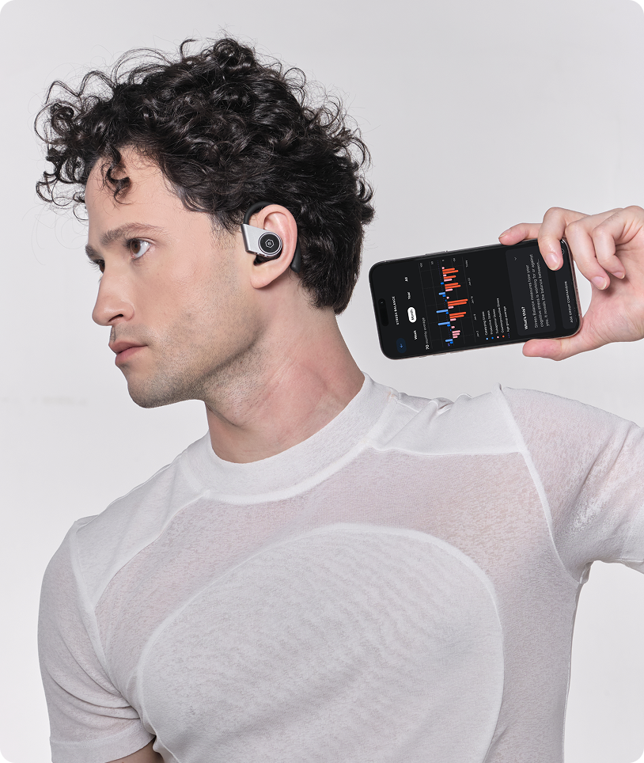

From brainwave-driven music compositions to neuro-responsive installations — artists and musicians have been at the forefront of BCI creativity since 2013.
A new song and music video by Grammy-winner Dana Leong's collaborative, wellbeing-focused music series TEKTONIK, featuring Emotiv Insight and BrainViz to translate neural activity into visual and sonic elements in real time.
TEKTONIK is a wellbeing-focused music series by Grammy-winner Dana Leong that bridges neuroscience and creative expression. In this collaboration, Emotiv Insight headsets captured real-time brain activity from performers and audience members, while BrainViz translated the neural data into flowing visual patterns that synced to the live music.

Every creative and artistic collaboration using EMOTIV technology, from 2013 to today.